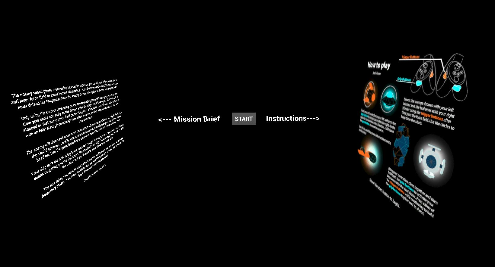

Thesis Week 2/3
Building Ships & adding music
For my thesis, I've been making some huge pushes in the development. It's been pretty hard with my new work schedual but I'm glad I was able to invest this weekend making some great progress. It's been really helpful to keep this updated check list, I'll modify thing, add them, or cross them off but it's great for keeping my things organized and satisfying as well. So after making some really rough models in Maya, I brought them into UE4 to see how they looked with some wireframes. The models were quickly designed with some roundness to them for the round timing indicator I put together previously. I kept the design super lightweight and tried to make each one unique enough to quickly recognized if the game started getting fast. I put together the hanger bay level in space like I initially designed and started placing things everywhere, also keeping this design very light weight. After switching to android viewport to get a better idea of what my game would look like in wireless quest mode, things started looking really ugly. I had to bring up the brightness and make sure the colors were more vibrant. One big issue was that the Android render didn't support the bloom effect that you get with glowing emissive materials. That was one visual I knew I needed to figure out, after searching online, I found out that I could fake it using a transparency texture. With a little blueprinting I got a pretty believable looking glow, I think that BeatSaber actually uses a similar technique. I had to make so many glow texture sheets and place them in so many areas. I used an unlit material of white to get the base looking glow which worked out pretty nicely as well. I later on decided to just cut all the lights and go with unlit everything, which actually didn't look too bad and made the game super light weight. I decided that I needed to figure out a real unified color pallet so checking online and some of adobes tools like Kuler I went with a teal, orange, light gray and dark blue color that I liked. It reminds me of some of the extra dramatic lighting they use in Hollywood as well as the natural colors of lightbulb cool or warmness. I tried out a bunch of combinations of wire material colors, flat color combinations and in the end I decided to go with these guys since it all kinda makes each pop enough I think. The basic orange and teal ones were a no brainier. I went with a white for the one that you have to collide with since it really stood out. I made the debris without glow since it kinda shouldn't have that and with darker colors which contrasts the white collider one. The big ship I settled with orange wings, a blue wire frame and both glows next to each other which blend into white in the middle. The other thing to note is that I put in the effort to give each of these a small animation with a really quick rig in Maya. For the start menu level, I came up with a story and took a bunch of time to make a nice little tutorial screen.  The story is a bit simple and rough but it gets the job done and makes sense of the whole game. I'm actually pretty proud of how my instructions layout came out, some screenshots and PhotoShopping made it comes a long way. Over here is the play test with all the new visual assets, I think I'm pretty happy with how it came out so far.I really wanted to test out the proof of concept so I grabbed a catchy sounding song from youtube and tried matching the beats. I used a system called sequencer that I use often for animations in UE4. Within this system I created loops within loops within loops. The whole process was quite tedious but didn't take too much brain power. Down here you can see the results of the first test. There's still a lot to be fixed before the first song will be played. I've got to make it so that the targets turn visibility off, cover it up with a particle effect and just track points so I can reuse them instead of them getting destroyed which should save even more bandwidth. I think I can comfortably say that I am over 75% done with this project and pretty excited to keep polishing it up. Right now the song is pretty difficult but that might be the route that I'll take since I just need to delete notes to make it easier.
home
while (!deck.isInOrder()) {
print 'Iteration ' + i;
deck.shuffle();
i++;
}
print 'It took ' + i + ' iterations to sort the deck.';